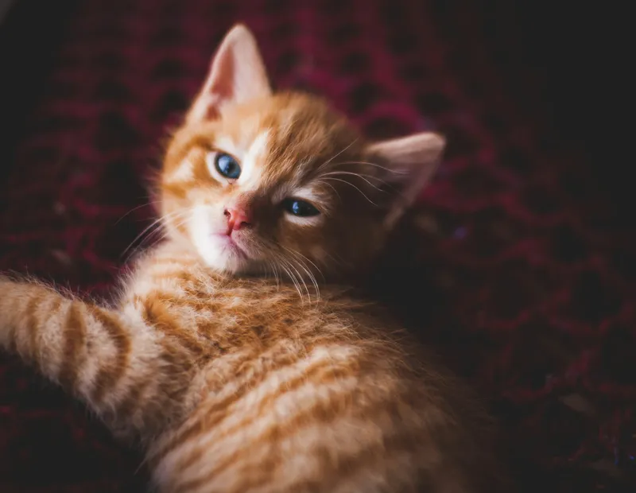
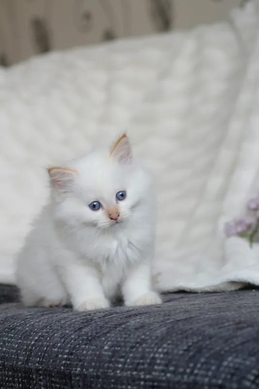
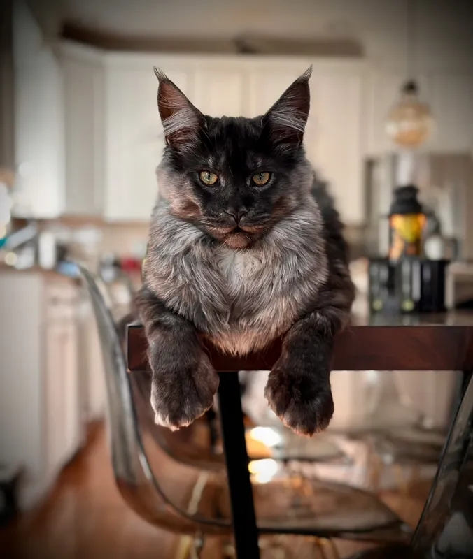
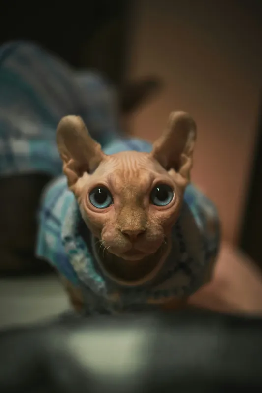
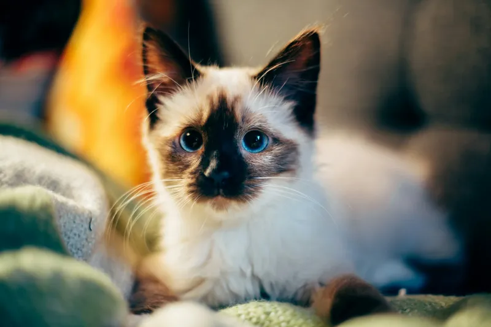
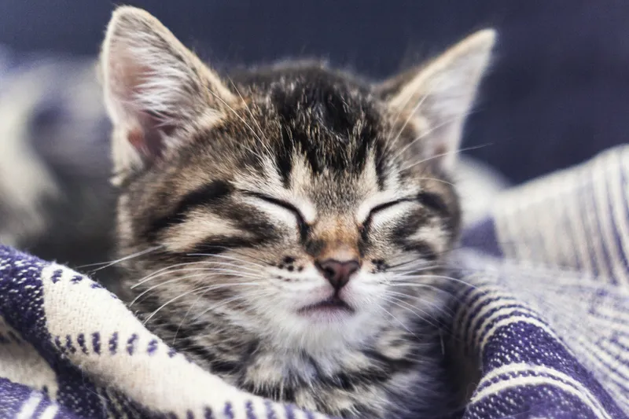

Common Breeds
American Shorthair
The American Shorthair is known for its friendly and adaptable nature, making it a popular choice among families. These cats are robust and have a variety of coat colors and patterns. They are also known for their hunting skills, originally bred to keep farms and ships free of rodents.
Ragdoll Cat
Ragdoll cats are large, affectionate, and have striking blue eyes. They are known for their calm and placid temperament, often going limp when picked up, which is how they got their name. Ragdolls are great companions and are particularly good with children and other pets.
Maine Coon
Maine Coons are one of the largest domesticated cat breeds, known for their intelligence and friendly disposition. They have a distinctive appearance with tufted ears and a bushy tail. These cats are also sociable and can get along well with other animals.
Sphynx Cat
The Sphynx cat is renowned for its hairless appearance, which is a result of a natural genetic mutation. Despite their lack of fur, they are known to be affectionate and enjoy human companionship. Sphynx cats are also energetic and playful.
Siamese Cat
Siamese cats are known for their striking blue almond-shaped eyes and sleek, elegant bodies. They are highly social, vocal, and intelligent, often forming strong bonds with their human companions. Siamese cats thrive on interaction and enjoy being the center of attention.
Tortoiseshell Cat
Tortoiseshell cats, often referred to as "torties," are not a specific breed but a color pattern found in many breeds. They are known for their distinctively mottled coats of black, red, and orange. Torties are often described as having strong, independent personalities.